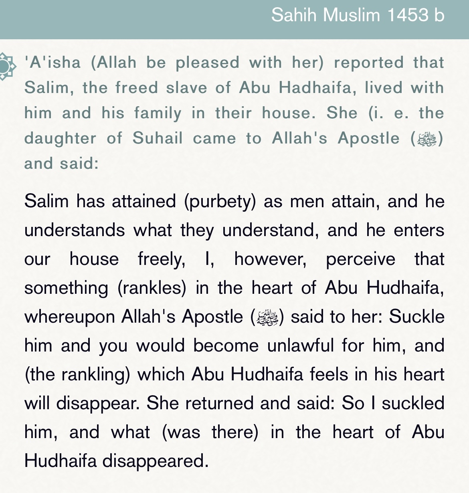
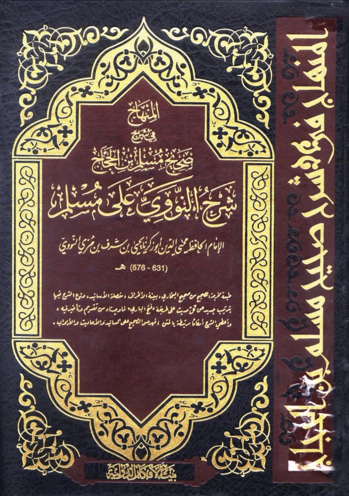
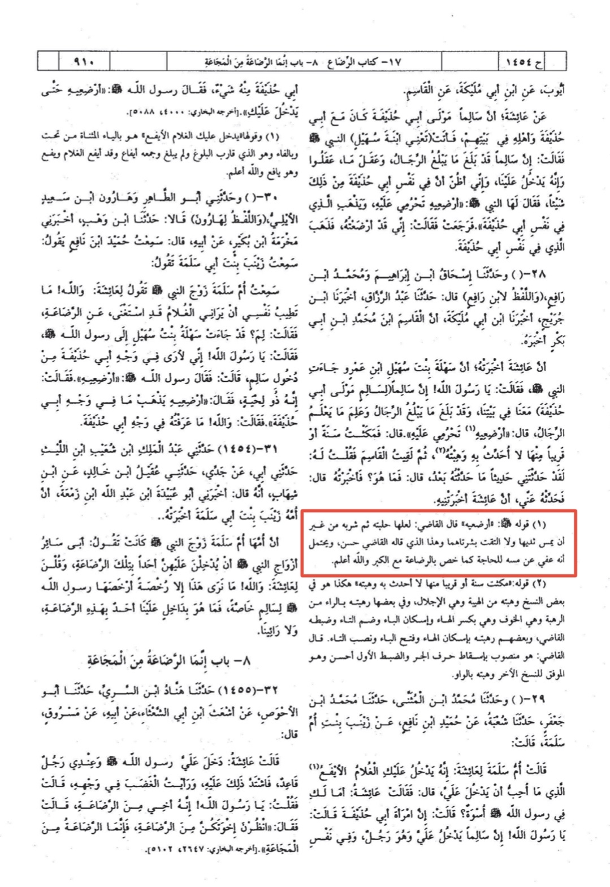
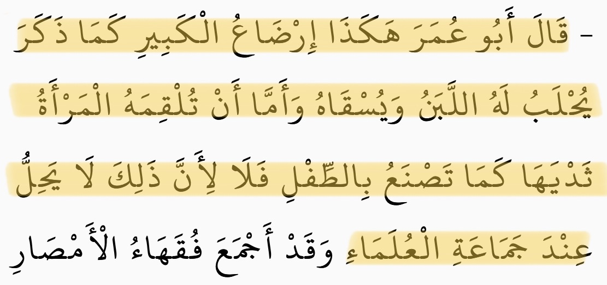
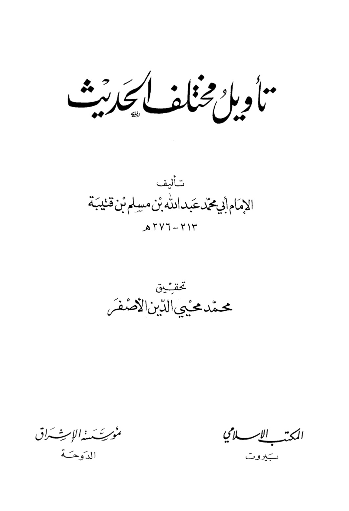
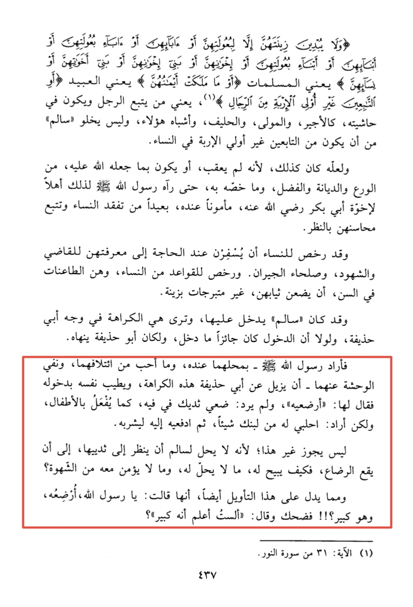
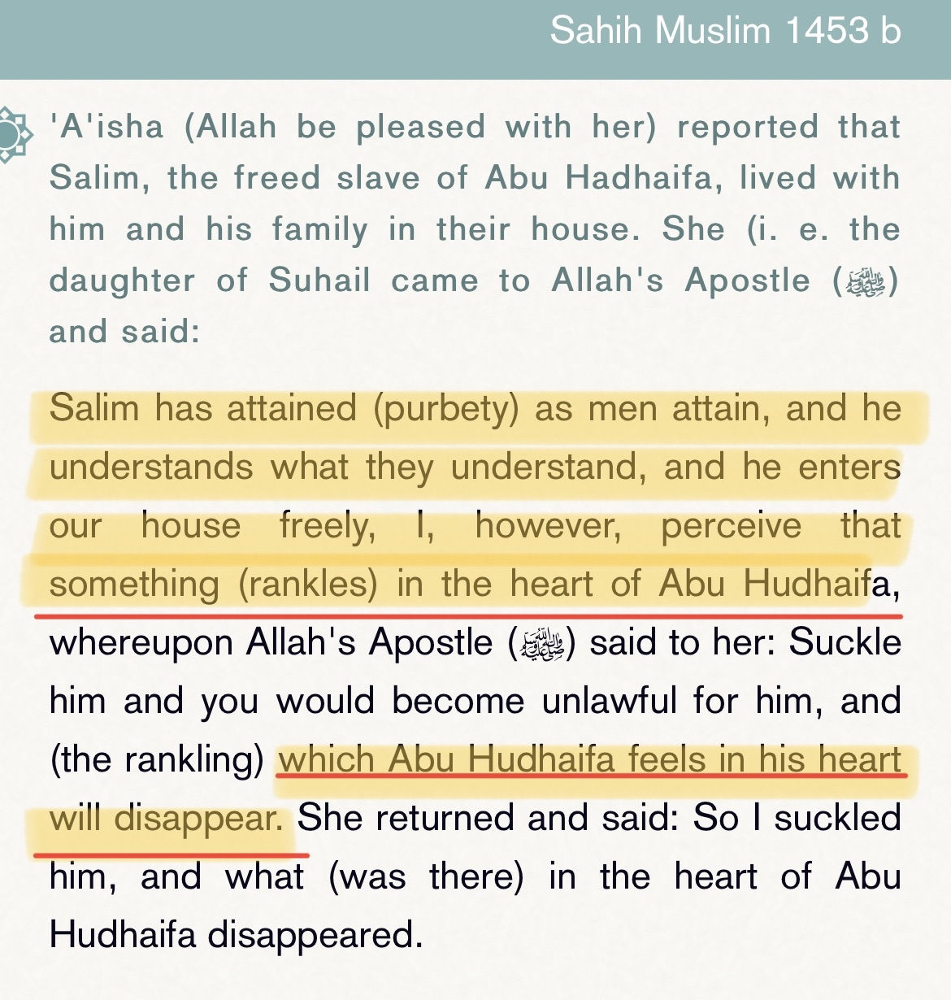
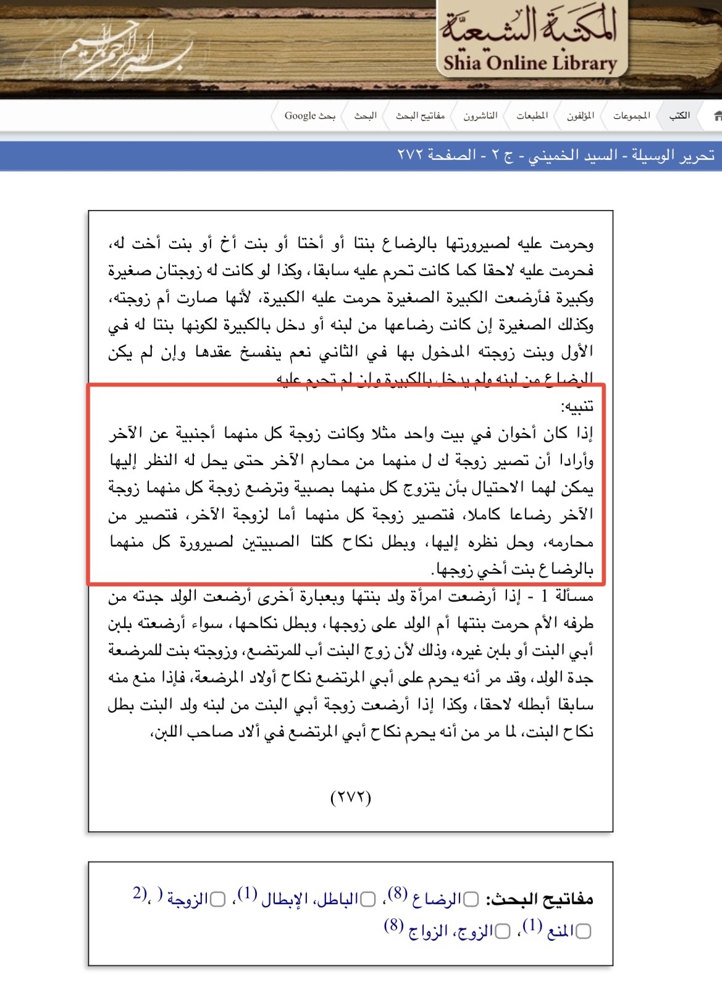
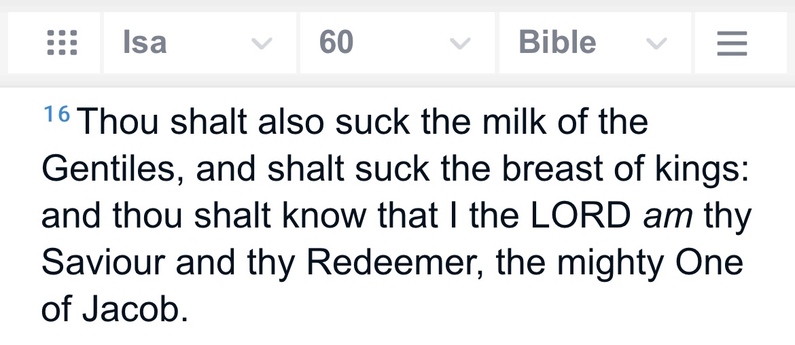
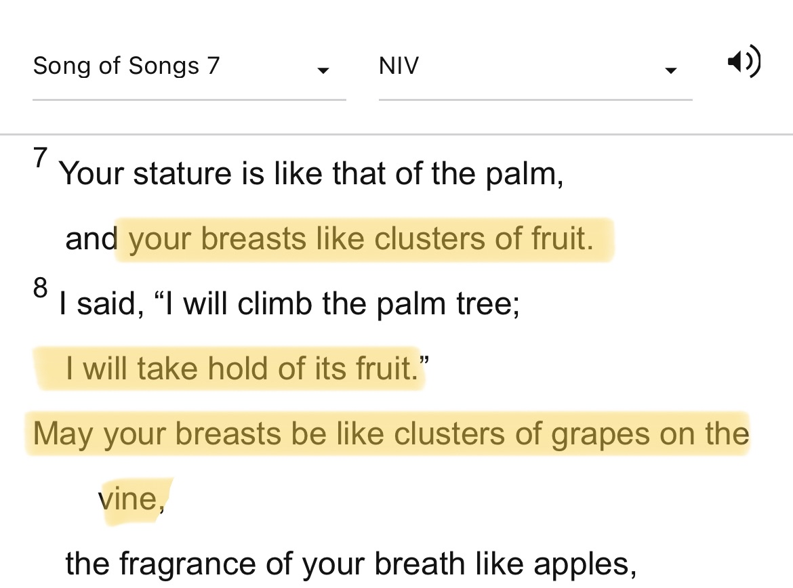

So this claim is derived from this Hadith:-

So firstly let’s understand the Hadith: Salim grew up in the household of Abu Hudhayfa as a member of the family,
although he was not directly related to them. When Salim reached manhood, Abu Hudhayfa was bothered that
an unrelated man was coming and going into his house where his wife resided. In order to make him feel better,
the Prophet (s) ordered that Salim drink the breast milk
Now does breast milk means sucking the breast?
Translation
The saying of prophet Muhammad pbuh: ((ارضعيه)) Al-Qadi said: “Maybe she milked it and then he drank it without touching
her breast and did not meet their skin, and what the Judge said is Hassan (correct/right)…”


Ibn Hajar comments on this tradition too, saying:
Al- Qadi ‘Iyad answers the question with the interpretation that the milk was put into a cup and
he did not drink it from her breast. Al-Nawawi said: This is interpretation is best.
Source: Fatḥ al-Bārī 4814
Translation
This is how fostering of an adult as it is mentioned: Milk is poured to the adult and he drinks it.
But that the woman should give her breasts to the adult as she does with children, this is not the case,
because that is not permissible according to the scholars
Source: al-tamhid li ma fi al-muwatta
(https://shamela.ws/book/1719/2803)

So Salim did not touch the wife of Abu Hudhayfa or drink directly from her breast,
because that would have defeated the purpose of the act from the start. Which is to become similar to a blood relative.


Translation
So he (the Prophet) said to her "foster him". And the Prophet didn't mean to say:
"Put your breast in his mouth" as it is done with the children, but he meant to say: Pour from your milk an amount,
then give it for him to drink
And no method other than that is permissible (i.e pouring the milk), because its not permissible for
"Salim" to look at her breasts until fostering occurs. So how will the Prophet allow for him (Salim) a thing which is forbidden?
And what proves this interpretation (i.e the interpretation that she poured the milk without showing breasts)
is that she said: O messenger of Allah, how come I foster him while he is adult?, so he (the prophet) laughed and said:
Don't I know he is adult?
And his laugh in this situation is an evidence that he made easy this fostering
Source: ta’wil Mukatalaf Al-hadith
Here as it mentions the prophet smile and what said shows that he never meant to have salim sucking her breast!

And if we look at the narration Abu hudaifa RA was annoyed by salim entering the house freely…
but after salim drank the breast milk what he used to feel, wasn’t annoying him anymore… do you think if he was annoyed
just by Salim entering freely the house, he won’t be more annoyed by salim suckling his wife’s breast?
If that the case we would see in the narration it says that abu hudaifa became more annoyed. But the opposite happened…
Now if a rafidhi is making that claim let’s see what your books say:

And if a Christian is making that claim let’s see what your books say:

Other than the language 🔞

I’d like to another point which just came to my head… is how could Aisha رضي الله عنها
breastfeed someone when she رضي الله عنها didn’t have a baby 💀?